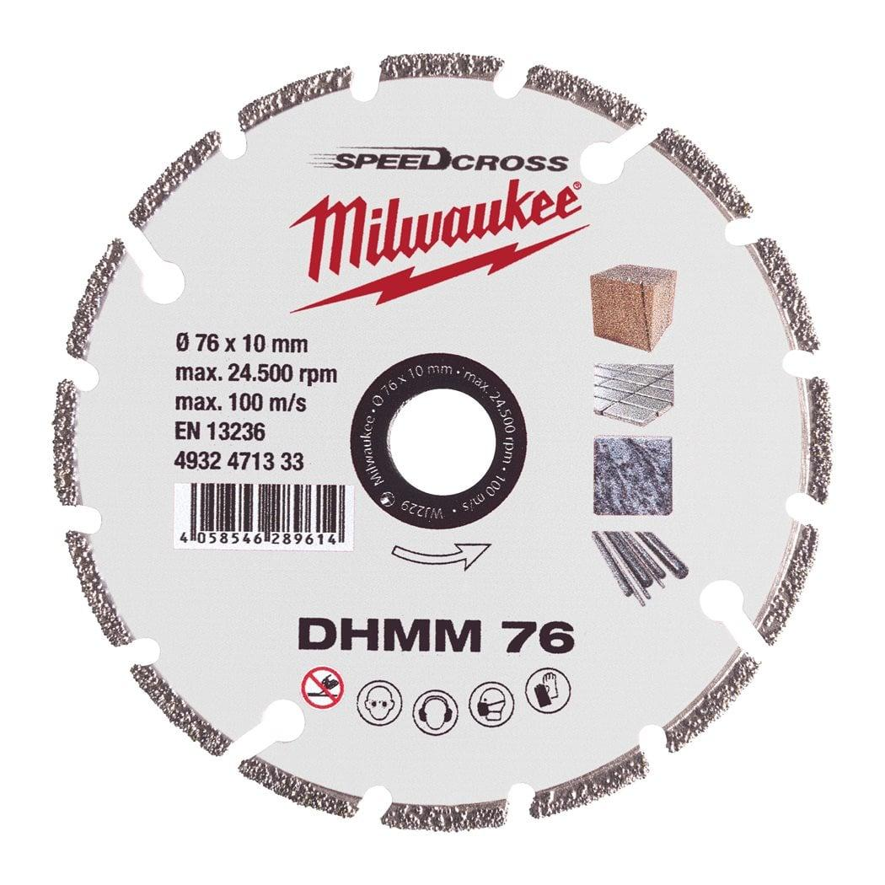
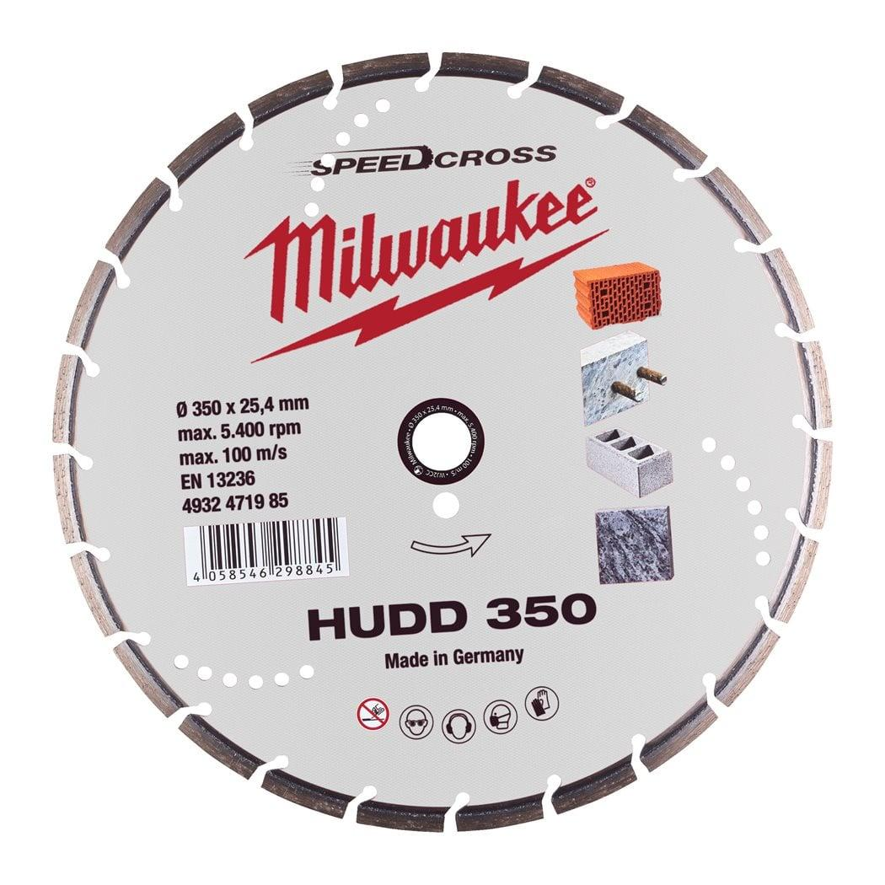
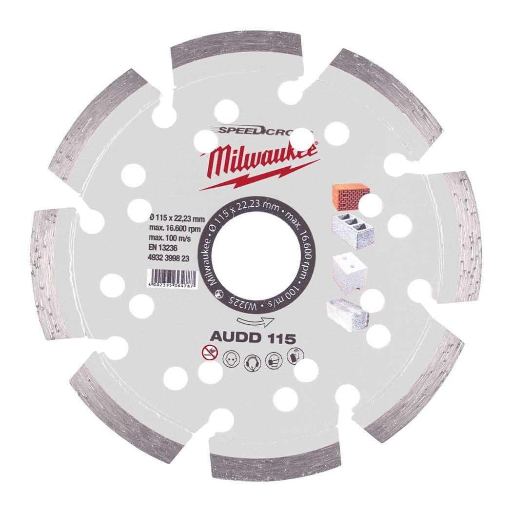
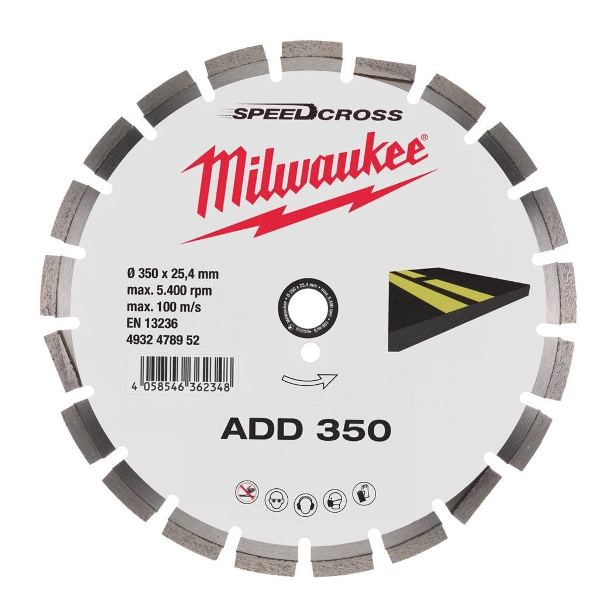
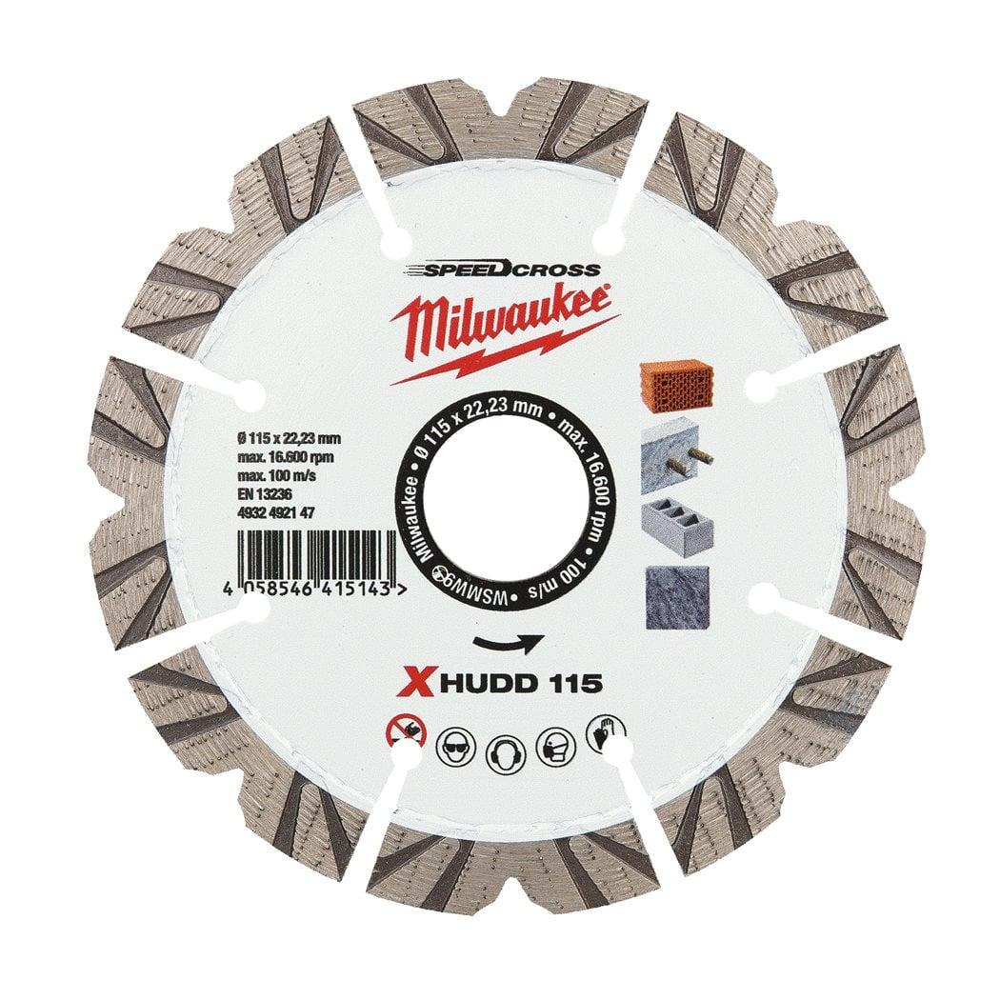
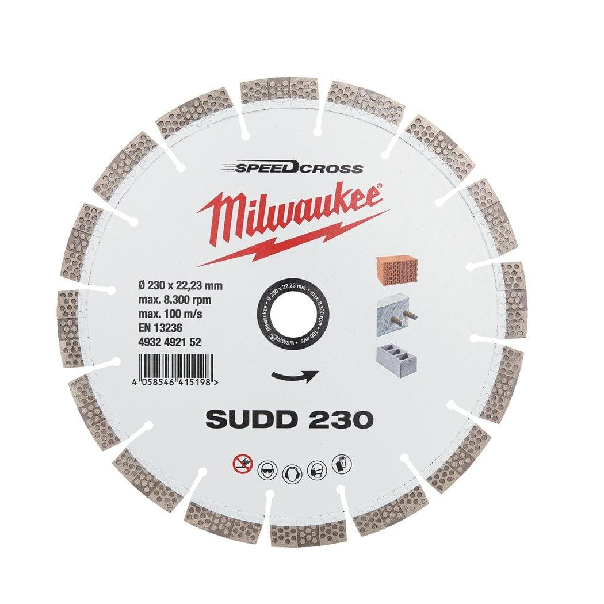
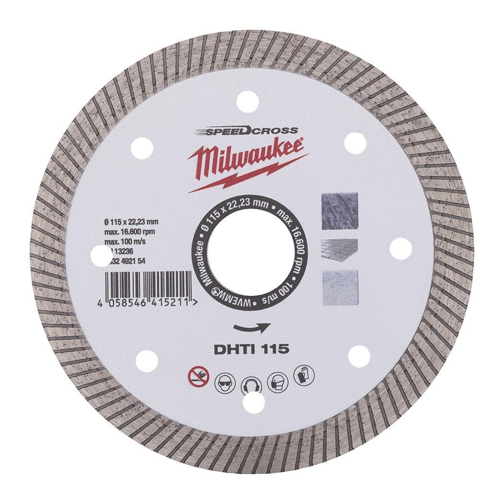

| Fits MILWAUKEE® | STEELHEAD™ 230 |
| Bore size (mm) | 22.23 |
| Cutting width (mm) | 1.8 |
| Diameter (mm) | 230 |
| Disc diameter (mm) | 230 |
| General building materials | Suitable |
| Materials suited for | Cast Iron|Non ferrous metal (Cu/Al)|Stainless steel |
| Pack quantity | 1 |
| Segment height (mm) | 2 |
| Wheel size (mm) | 230 |
| Article Number | 4932492016 |
| EAN | 4058546413835 |